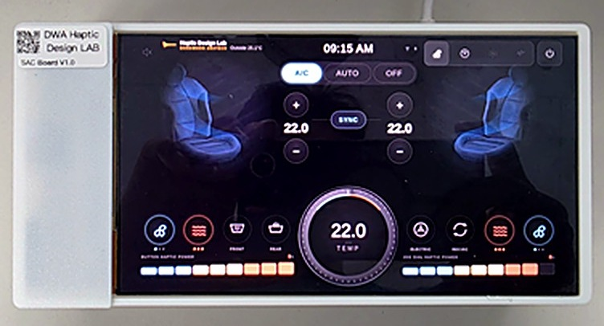

손끝의 느낌을,
데이터로 설계합니다
안녕하세요, 동운아나텍 Haptic Design Lab 입니다.
같은 칩, 같은 액추에이터라도 기구물이 바뀌면 손끝의 느낌은 달라집니다. Haptic Design Lab 은 그 차이를 감각이 아니라 측정으로 다룹니다.
이번 레터에서는 새로 선보이는 두 가지 솔루션을 소개합니다. 각 항목의 ‘자세히 보기’에서 상세 소개와 사용 가이드를 확인하실 수 있습니다.
HapTune Studio + SAC Board
목표 두 칸, 그리고 1분이면 됩니다

HapTune Studio 실제 동작 화면 — 실제 보드에서 29샷을 진행한 결과입니다.
원하는 세기(g)와 멈춰야 할 시간(ms)을 넣고 시작을 누릅니다. 사전 점검부터 검증·적용까지 20~30샷, 1분이 걸리지 않습니다.
- 느낌을 먼저 고릅니다짧고 또렷하게 또는 묵직하게. 고른 느낌에 맞춰 구동 주파수를 스스로 찾습니다.
- 모든 샷이 실측입니다SAC Board 가 구동과 계측을 하나의 시계로 처리해, 보낸 파형과 측정된 가속도를 같은 시간축에 겹쳐 보여 줍니다.
- 진동 복사 · 센서 스코프다른 기기의 진동을 캡처해 이 액추에이터로 재현하고, 튜닝과 별개로 3축 진동 계측기로도 쓸 수 있습니다.
- 결과는 바로 양산으로결과 리포트(국문·영문)와 C 코드를 그대로 출력합니다. I2C 함수 세 개만 연결하면 고객 MCU 에서 동작합니다.
평가 지그에 장착한 액추에이터의 실제 튜닝 결과입니다.
Piezo Haptic Demo Unit
평평한 화면 위에, 진짜 버튼의 촉감을

Piezo Haptic Demo Unit — HVAC 시트 실행 화면
‘화면을 누르는 느낌’을 ‘버튼을 누르는 느낌’으로 바꾸는 피에조 햅틱 시연 장비입니다. 모든 촉각 피드백은 동운아나텍의 고전압 피에조 햅틱 드라이버 DW3M120 이 디스플레이 후면의 피에조 필름을 직접 구동해 만들어 냅니다.
- 고전압 피에조 드라이버 DW3M120내장 부스트 컨버터로 피에조 필름을 수십 Vpp 로 구동해, 짧고 선명한 클릭 진동을 디스플레이 전면에 그대로 전합니다.
- 차량용 GUI 시트 2종HVAC(공조) 시트는 버튼 클릭감과 다이얼 디텐트를, Drive Mode 시트는 시프트 게이트(P·R·N·D) 체결감과 로터리 디텐트를 재현합니다.
- 진동 세기 9단계 조절각 시트 하단의 HAPTIC POWER 슬라이드로 버튼과 다이얼의 진동 세기를 따로 바꿔 가며 비교할 수 있습니다.
- 전원만 연결하면 시작12V 어댑터와 USB-C 전원을 연결하면 약 30초 뒤 데모 GUI 가 자동으로 실행됩니다. 반드시 동봉된 전원을 사용해 주십시오.
제품 문의나 데모 요청은 담당 영업 또는 Haptic Design Lab 으로 연락 주십시오. 기구물을 보내 주시면, 원하는 느낌을 실측 데이터로 설계해 드립니다.
이 페이지는 최신 버전으로 계속 업데이트됩니다. 북마크해 두시면 언제든 최신 자료를 확인하실 수 있습니다.
Dongwoon Anatech · Haptic Design Lab